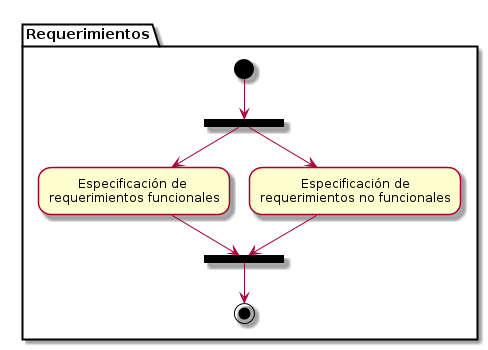

Metodología para el Desarrollo Colaborativo de Software Libre (MDCSL) Versión 2.0
Especificación de requerimientos (Funcionalidades)
La especificación de requerimientos consiste en describir de manera detallada cada una de las funcionalidades o requerimientos que debe cumplir la aplicación a desarrollar. En esta especificación se debe indicar el flujo de actividades que implica el llevar a cabo cada funcionalidad del sistema.
Para la especificación de los requerimientos de la aplicación se utilizarán diagramas de casos de uso con su respectiva descripción textual.
1. Casos de Uso | Nombre del caso de uso
Diagrama
[Se coloca el diagrama correspondiente al caso de uso]
Descripción textual
[Se describe el caso de uso utilizando el formato que se indica a continuación]
| Nombre del caso de uso: |
|
|---|---|
| Actores participantes: Se coloca el nombre de los actores que participan en el caso de uso | |
| Condiciones de entrada: Se indican las condiciones de entrada al caso de uso, es decir, el evento que da inicio al caso de uso | |
| Condiciones de salida:Se indican las condiciones de salida del caso de uso, es decir, los resultados que se obtienen una vez concluido el caso de uso | |
| Flujo de básico | Se indica el flujo de actividades, en condiciones normales, del caso de uso. Cada una de estas actividades es enumerada |
| Flujos alternativos | Se indican los flujos alternativos del caso de uso, es decir, las actividades que se pueden generar en situaciones distintas a las condiciones normales establecidas para el caso de uso. Cada flujo alternativo representa el conjunto de actividades generadas dada una condición contraria al flujo básico. Cada flujo básico debe ser enumerado |
| Requisitos especiales | En este campo se indican los requisitos especiales asociados al caso de uso en particular. Por ejemplo, se puede indicar el máximo y el mínimo de caracteres que debe contener una cadena, el tipo de dato al que debe pertenecer algún atributo indicado en el caso de uso, así como cualquier otra restricción que limite el caso de uso |
2. Casos de Uso | Nombre del caso de uso
Diagrama
[Se coloca el diagrama correspondiente al caso de uso]
Descripción textual
[Se describe el caso de uso utilizando el formato que se indica a continuación]
| Nombre del caso de uso: |
|
|---|---|
| Actores participantes: Se coloca el nombre de los actores que participan en el caso de uso | |
| Condiciones de entrada: Se indican las condiciones de entrada al caso de uso, es decir, el evento que da inicio al caso de uso | |
| Condiciones de salida:Se indican las condiciones de salida del caso de uso, es decir, los resultados que se obtienen una vez concluido el caso de uso | |
| Flujo de básico | Se indica el flujo de actividades, en condiciones normales, del caso de uso. Cada una de estas actividades es enumerada |
| Flujos alternativos | Se indican los flujos alternativos del caso de uso, es decir, las actividades que se pueden generar en situaciones distintas a las condiciones normales establecidas para el caso de uso. Cada flujo alternativo representa el conjunto de actividades generadas dada una condición contraria al flujo básico. Cada flujo básico debe ser enumerado |
| Requisitos especiales | En este campo se indican los requisitos especiales asociados al caso de uso en particular. Por ejemplo, se puede indicar el máximo y el mínimo de caracteres que debe contener una cadena, el tipo de dato al que debe pertenecer algún atributo indicado en el caso de uso, así como cualquier otra restricción que limite el caso de uso |
Flujograma de actividades
